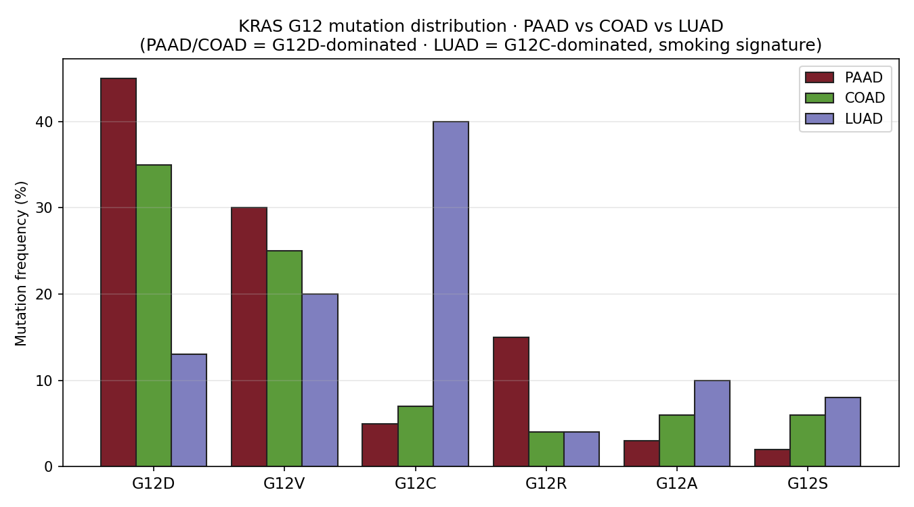

papers_hub_2026_0509 · paper1-style dossier layer · generated 2026-05-09
데이터 정의서 / Data Definition Sheet — Lumenix · PAAD Deep Dive · Pancreatic Cancer Neoantigen Vaccine
이 페이지는 원본 내용을 유지하면서, 첫 화면에 분석 데이터 정의서, 현재 claim boundary, 읽는 순서, figure/table 해설을 새로 붙인 2026-05-09 리뉴얼 버전입니다. 모든 그림은 “어떤 데이터가 들어갔는지 / 어떻게 읽는지 / 어디까지 주장 가능한지”를 같이 표시합니다.
3figures / visuals
3tables explained
11flow headings
Neoantigen / Vaccinepage family
0% 60% 100% 90% HR=2.17 p=0.002 n=3 HR=1.41 45% 12% 5% 40%
Current statusDossier ready, proof bounded
Claim boundaryNeoantigen/pMHC/TCR models support traceable ranking and abstention, not definitive immunogenicity.
Next useFrame PAAD vaccine-first only for resected/MRD low-burden contexts; routine THCA vaccine-first is not defensible.
0. Analysis Inputs
data dictionary firstTCGA-THCA K2 / PRJEB11591 GSE76039 / Landa advanced thyroid Hugo/Riaz melanoma ICI pool AFND / Korean HLA references 8-gene mini-index RAI_8 / thyroid differentiation score MAPK output score HLA-II / IFN-gamma module Cohen's d / Spearman rho / Cox HR
| Term | Class | Definition | Where this page uses it |
|---|---|---|---|
| TCGA-THCA | cohort | TCGA thyroid carcinoma cohort; RNA-seq, clinical, mutation, methylation and cBioPortal-derived mutation/clinical slices depending on page. | Paper 1 DM1/DM2 derivation, survival, promoter methylation, driver strata, and several downstream reuse pages. |
| K2 / PRJEB11591 | cohort | Korean PTC RNA-seq cohort used as an external Korean replication/calibration anchor. | Korean portability, mini-index calibration, and NBNR/DM-like comparisons. |
| GSE76039 / Landa advanced thyroid | cohort | Advanced thyroid cancer expression resource used as a PDTC/ATC lineage-collapse benchmark. | Mechanism heterogeneity, advanced-disease comparisons, and reverse-causality boundary checks. |
| Hugo/Riaz melanoma ICI pool | cohort | External melanoma immunotherapy RNA/clinical resources used as ICI-response context, not thyroid predictor proof. | Paper 3 vulnerability-only evidence and claim-boundary pages. |
| AFND / Korean HLA references | reference | Allele-frequency and literature-derived HLA reference material; some rows are registry/approval-gated rather than executable analysis inputs. | Paper 2 HLA and Paper 4 GD/Pan-Asian backlog pages. |
| 8-gene mini-index | score | Curated thyroid-lineage/dedifferentiation panel used to split molecular dark-matter states; higher DM1-like score means more dedifferentiated. | Paper 1 core axis and many downstream transfer/image/vulnerability pages. |
| RAI_8 / thyroid differentiation score | score | Mean z-score over thyroid differentiation genes; direction is differentiated / RAI-avid unless explicitly negated. | Lineage preservation/collapse comparisons and treatment-rationale pages. |
| MAPK output score | score | MAPK pathway output or driver-class proxy used to compare pathway activity against thyroid-lineage scores. | Paper 1 Fig 8 mechanism extensions v9-v18 and PRISM/DepMap overlays. |
| HLA-II / IFN-gamma module | score | Inflammation / antigen-presentation module used for HT-overlap and ICI-vulnerability context. | Paper 2/Paper 3/Paper 4 HLA and immune-context pages. |
| Cohen's d / Spearman rho / Cox HR | statistic | Effect-size and association statistics reported from local TSV/JSON/HTML tables; direction must be read from each table caption. | Most dossier and validation pages. |
| PRISM / DepMap | external screen | Cancer dependency/drug-screen resources used for vulnerability prioritization and MAPK-inhibitor overlays. | Paper 1/9/10/11 synthetic-lethality and druggability pages. |
| Neoantigen / pMHC / TCR resources | external resource | Neoantigen, protein-language-model, structural, TCR and literature-corroboration resources used in the vaccine pages. | Cancer vaccine, neoantigen, TCR and pMHC pages. |
1. Reading Flow
section logicFlow summary: Pancreatic Cancer (PAAD) · Neoantigen Vaccine Re-analysis → 1 · Why PAAD? → 2 · KRAS G12 distribution across cancers → 3 · Top PAAD vaccine candidates (XGBoost-prioritized) → 4 · External corroboration in VDJdb
2. Figure Explanations
preview; full gallery below
Figure 01 · Neoantigen / pMHC ranking evidence
paad_fig1_kras_distribution.png
KRAS distribution PAAD vs COAD vs LUAD
- Data entered
- Neoantigen/pMHC/TCR/vaccine benchmark resources and derived model outputs.
- How to read
- Read candidate identity, HLA context, model score, and orthogonal support as a ranking stack.
- Boundary
- Model ranking is not definitive immunogenicity proof without assay or clinical validation.
- Source match
- No same-basename result match listed.

Figure 02 · Neoantigen / pMHC ranking evidence
paad_fig2_top10.png
Top 10 PAAD candidates
- Data entered
- Neoantigen/pMHC/TCR/vaccine benchmark resources and derived model outputs.
- How to read
- Read candidate identity, HLA context, model score, and orthogonal support as a ranking stack.
- Boundary
- Model ranking is not definitive immunogenicity proof without assay or clinical validation.
- Source match
- No same-basename result match listed.

Figure 03 · HLA / allele-frequency evidence
paad_fig3_hla_coverage.png
PAAD HLA coverage
- Data entered
- Neoantigen/pMHC/TCR/vaccine benchmark resources and derived model outputs.
- How to read
- Read allele resolution, ancestry panel, registry/literature source, and validation gate before using the result.
- Boundary
- Cancer expression ecology and germline GD genetics must remain separated.
- Source match
- No same-basename result match listed.
3. Table Explanations
embedded data rows4. Related Renewed Pages
same family / same prefixalphafold_simulation anchor_atlas autoimmunity_browser barneo_high_impact_candidate_pack_ barneo_top_pass_reviewer_evidence_ batch30_panel cancer_vaccine_agent cancer_vaccine_barneo_x_interpreta
Current situation: current_situation_2026_0509.html · Source page: project/papers_hub_2026_0509/paad_deep_dive.html · Renewed page: project/papers_hub_2026_0509/paad_deep_dive.html · Voice-protected manuscript sections were not edited.
{kind=link}